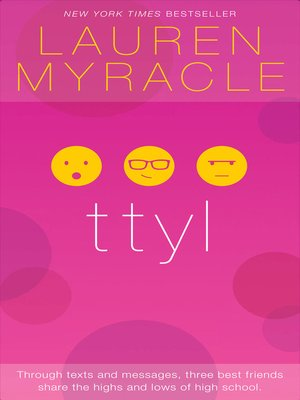
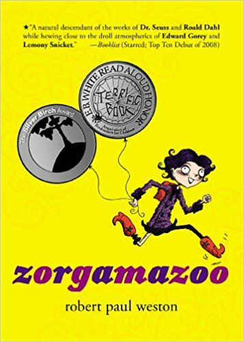

Welcome to the world of text-talk novels, where literature and technology collide to create a unique form of storytelling. Text-talk novels, also known as chat-fiction or mobile fiction, are written in the style of text messages, emails, or social media posts. These novels are designed to be read on a mobile device, with each message or post representing a chapter or scene in the story.
This relatively new form of literature has gained popularity among teenagers, who are constantly using their phones and looking for quick, entertaining reads. Text-talk novels are often fast-paced, suspenseful, and highly interactive, with readers able to engage with the story by replying to characters' messages or choosing between different plot options.
This form of writing has become well-known in Japan, where it originated, and became popular on the year 2003 and started to spread internationally, particularly to China, the United States, Germany, and South Africa.
HERE ARE SOME EXAMPLES OF TEXT-TALK NOVEL:

DEEP LOVE
"Deep Love" by Yoshi is a text-talk novel that depicts the strugging life of a 17-year-old girl named Ayu who are forced to sell her body as a teenage prostitute to pay off her father's debts. As she navigates the dangerous and seedy underworld of the sex industry, Ayu also grapples with her own feelings of shame, despair, and hopelessness.

THE BOYFRIEND APP
"Deep Love" by Yoshi is a text-talk novel that depicts the strugging life of a 17-year-old girl named Ayu who are forced to sell her body as a teenage prostitute to pay off her father's debts. As she navigates the dangerous and seedy underworld of the sex industry, Ayu also grapples with her own feelings of shame, despair, and hopelessness.

TTYL
"TTYL" by Lauren Myracle, a young adult novel, published in 2004, is a groundbreaking work of fiction that is entirely written in the form of instant message conversations. The story follows three teenage girls, Angela, Maddie, and Zoe, as they navigate their way through high school and the ups and downs of friendship. The novel uses text talk abbreviations and other forms of online shorthand throughout, creating a unique and modern writing style that reflects the way that young people communicate online. Lauren Myracle is an American author who has written many books for young adults, including the "Internet Girls" series, which includes "TTYL," "TTFN," and "L8R, G8R."

ZORGAMAZOO
"Zorgamazoo" by Robert Paul Weston, a children's book, published in 2008, tells the story of a young girl named Katrina Katrell who sets out to save the fantastical world of Zorgamazoo from an evil ruler. The book is written in verse and incorporates text talk abbreviations and other forms of online shorthand to create a playful and modern writing style that is intended to engage and entertain younger readers. The use of text talk also reflects the way that children and young people communicate online, making the book more relatable to its target audience. Robert Paul Weston is a Canadian author who has written several books for children and young adults, including "Dust City," "Prince Puggly of Spud and the Kingdom of Spiff," and "Zorgamazoo."